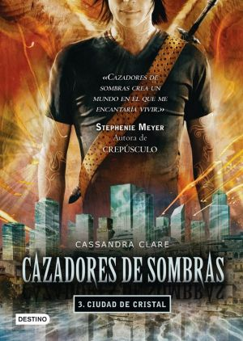
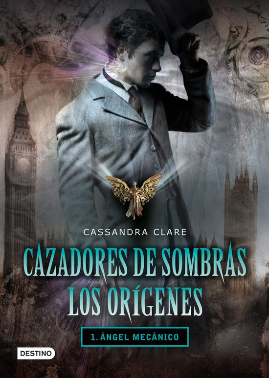

Saga: Instrumentos Mortales
Ciudad de Hueso
Cuando Clary Fray decidió ir al Club Pandemónium en la ciudad de Nueva York, nunca creyó que presenciaría un asesinato. Mucho menos uno hecho por tres adolescentes con el cuerpo repleto de extraños tatuajes. Fue la primera vez que Clary se cruzó con el Mundo de las Sombras y, sobre todo, con los Cazadores de Sombras, guerreros dedicados a erradicar demonios de la Tierra y mantener a todos los Subterráneos bajo el orden de los Acuerdos y la Clave. Fue también la primera vez que se encontró con el guapo muchacho de cabellos dorados, Jace Wayland. En tan solo 24 horas, Clary es arrastrada al mundo vengativo y peligroso de Jace cuando es atacada por un demonio y su madre desaparece. Pero, ¿por qué los demonios estarían interesados en una simple mundana como Clary? ¿Por qué de repente ha obtenido la Visión? A los Cazadores de Sombras les sobran múltiples preguntas...
Ciudad de Ceniza
Clary Fray desearía que su vida volviera a ser normal. Si pudiera dejar atrás el mundo de los cazadores de sombras, tendría más tiempo para Simon, su mejor amigo, que se está convirtiendo en algo más... Pero el mundo subterráneo que acaba de descubrir no está preparado para dejarla ir; en especial ese apuesto y exasperante Jace el cual supuestamente es su hermano y no la quiere fuera de su vida. Para complicar las cosas, una ola de asesinatos sacude la ciudad. Clary cree que Valentine está detrás de esas muertes para obtener la Copa Mortal, los cazadores de sombras son invitados a la corte de las hadas, donde la Reina Seelie provoca una escena donde Jace y Clary tienen que besarse para poder liberar a Clary de la corte, que perturba a Simon y este huye de ellos que al final termina convertido en vampiro...
Ciudad de Cristal
Arriesgando su vida, Clary no duda en entrar en la Ciudad de Cristal sin permiso. Además, ha conocido a un misterioso y encantador cazador de sombras llamado Sebastian y está decidida a descubrir los secretos de su pasado familiar. Pero otras urgencias la apremian; lidiar con la insolencia de Jace; reencontrarse con Simon; y sobre todo, conseguir que licántropos, vampiros y cazadores de sombras dejen a un lado sus diferencias y unan sus fuerzas para vencer a Valentine. ¿Lo conseguirá?
Ciudad de los Angeles Caidos
Ciudad de los Ángeles Caídos es la cuarta novela de la serie Cazadores de Sombras por Cassandra Clare. Cronológicamente, es la séptima historia de Las Crónicas de Cazadores de Sombras. Ciudad de los Ángeles Caídos intercambia el enfoco literario entre Jace Herondale y Clary Fray quienes ahora pueden oficialmente decir que son una pareja oficial, ya que se enteraron de que no son verdaderamente hermanos. Mucho del relato se trata del entrenamiento de Clary como uno de los Cazadores de sombras y los ajustes tomados por Simon Lewis para acostumbrarse a su nueva vida como Vampiro Diurno . En el libro, alguien desconocido ha estado matando a los Cazadores de Sombras. Aprendemos que esta persona estuvo relacionado personalmente con Valentine Morgenstern y deja todos los cuerpos destrozados por varias partes de Nueva York. La guerra entre los vampiros esta causando caos en el mundo subterráneo, y solo Simon (el que puede caminar en plena luz de día) tiene la capacidad para escoger un fin a la violencia. Que pena que, aunque todos lo quieren de su lado, no le interesa lo que pasa en ese mundo. Mientras tanto, Jace y Clary investigan un misterio que contiene consecuencias muy personales para todos: lo que no se sabe es si estos cambios resultaran en que la relación entre los dos sea mas fuerte, o si la destruirá para siempre.
Ciudad de las Almas Perdidas
Ciudad de las Almas Perdidas es la quinta novela en la serie de los Cazadores de sombras escrita por Cassandra Clare. Cronológicamente, es la octava historia en las crónicas de los Cazadores de sombras. Lilith, un demonio, ha sido destruido y Jace Herondale finalmente tiene su libertad. Cuando llegan los Cazadores, sin embargo, solo encuentran sangre y vidrio. Clary Fray siente unas emociones sumamente agri-dulce; el chico quien ella ama ha desaparecido sin rastro, pero a la misma vez, a desaparecido el chico de sus pesadillas, Sebastian Verlac. Su hermano e hijo de Valentine Morgenstern, Sebastian esta completamente decidido en lograr lo que su padre no pudo y destruir a todos los Cazadores. Ningun tipo de magia logra conseguir un rastro de los chicos, pero Jace no puede mantenerse lejos por mucho tiempo. Cuando se llegan a encontrar por primera vez en tanto tiempo, Clary descubre con sus propios ojos el horror que la magia de Lilith le ha causado al pobre Jace. Ya no es el chico con quien se enamoro. Él y Sebastián se han unido del alma y Jace se a convertido en un sirviente verdadero de Valentine. Determinados por destruir a Sebastian, se dan cuenta de que no hay manera de hacerlo sin causarle daño al otro. ¿Lo harán cuando el momento llegue?
Ciudad del Fuego Celestial
La oscuridad vuelve al mundo de los Cazadores de Sombras. Mientras su sociedad se está derrumbando a su alrededor, Clary, Jace, Simon y sus amigos deben unirse para luchar con el mayor mal que los Nefilim nunca han enfrentado: El hermano de Clary. Nada en el mundo puede derrotarlo - ¿deben viajar a otro mundo para encontrar la oportunidad? Vidas van a perderse, sacrificios de amor, y el mundo entero cambiará en el sexto y último libro de la saga Cazadores de Sombras.
Saga: Los Origenes
Angel Mecanico
Tessa Gray es invitada por su hermano a vivir con él tras la muerte de su tía. Para ello, se dirige a Londres, donde es raptada por una organización secreta llamada el club Pandemonium, y rescatada por los cazadores de sombras. Pronto Tessa verá su corazón dividido entre Jem, cuya frágil belleza oculta un oscuro secreto, Y Will, cuya hiriente ironía y cambios de humor constantes la mantienen a distancia, mientras los tres intentan salvar el mundo de aquel llamado el Magíster.
Principe Mecanico
En el mundo subterráneo mágico del Londres victoriano, Tessa Gray por fin encontró la seguridad que buscaba pasando su tiempo con los Cazadores de sombras. Pero resulta que esta misma seguridad no dura cuando las fuerzas rebeldes del grupo de la Clave insisten que su protectora, Charlotte, sea el nuevo líder del Instituto. Si Charlotte pierde su posición, no habrá nadie quien proteja a Tessa y estará completamente sola en las calles. Con la ayuda del bello y auto-destructivo Will, junto a Jem cuyo es ferozmente dedicado, Tessa descubre que la guerra del Magister en los Cazadores de Sombras es profundamente personal. Él les echa la culpa de una tragedia de hace mucho tiempo que destrozó su vida. Para desentrañar los secretos del pasado, el trío viaja de brumoso Yorkshire para una casa de campo que tiene horrores sin cuento. En los suburbios de Londres, llegan a un salón de baile encantado donde Tessa descubre que la verdad de su parentesco es más siniestro de lo que había imaginado. Cuando se encuentran con un demonio que le lleva una advertencia a Will, se dan cuenta de que el propio Magister sabe todos sus movimientos y que uno de ellos los ha traicionado. Tessa encuentra que su corazón late más y más por Jem, pero su deseo por Will, a pesar de su mal humor, continúa su inquietud. Pero algo está cambiando en Will; el muro que ha construido en su corazón se está desmoronando. Encontrando el Magister puede que sea suficiente para liberar sus secretos, y quizás darle a Tessa las respuestas sobre quién ella es y su propósito en esta vida. Mientras la búsqueda peligrosa de la verdad continúa, Tessa aprende que cuando el amor y las mentiras se mezclan, pueden destrozar incluso el corazón más puro.
Princesa Mecanica
Mientras Tessa se va preparando para su boda, una red de sombras empieza a ceñirse sobre los cazadores de sombras del Instituto de Londres. Un nuevo demonio aparece, uno ligado por sangre y a los secretos de Mortmain, el hombre que planea usar a su ejército de autómatas despiadados, los Artefactos Infernales, para destruir a los cazadores de sombras. Mortmain necesita solo un último objeto para completar su plan. Necesita a Tessa. Tessa sabe que Axel Mortmain, el Magister, va a por ella, pero no dónde o cuándo va a atacar. Charlotte Branwell, la directora del Instituto de Londres, está desesperada para encontrar a Mortmain primero. Y Jem y Will, los chicos que reclaman el corazón de Tessa por igual, harán cualquier cosa para salvarla. Aunque Tessa y Jem ahora estén comprometidos, y Will sabe que debería forzarse a encontrar a otra persona por la que preocuparse, está más enamorado de ella que nunca. En las últimas palabras de la muerte de Jessamine Lovelace reside la pista que podría conducir a Tessa y a sus amigos hasta Mortmain. Pero los cazadores de sombras del Instituto de Londres no pueden hacerlo solos, y en su país Idris, el cuerpo de la Clave dudan de sus peticiones que Mortmain vaya a por ellos. Desertados por aquellos que deberían ser sus aliados y con sus enemigos acercándose, los cazadores de sombras se encuentran atrapados cuando Mortmain tiene la medicina que es todo lo que mantiene a Jem con vida. Con su mejor amigo en las puertas de la muerte está en manos de Will arriesgas todo para salvar a la persona que ambos aman.